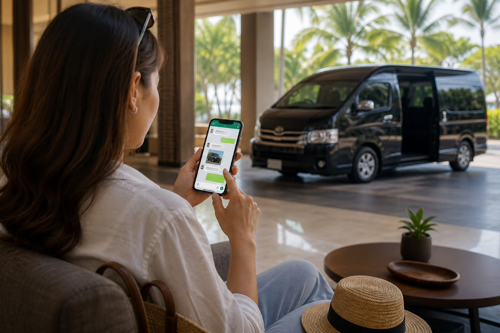

คู่มือรถตู้ภูเก็ต
เช่ารถตู้ภูเก็ตพร้อมคนขับ ดีอย่างไร วิธีจองให้มั่นใจ
คู่มือจองรถตู้ภูเก็ตพร้อมคนขับ เปรียบเทียบกับแท็กซี่ รถเช่า และทัวร์รวมกลุ่ม พร้อมข้อมูลที่ต้องเตรียม ช่องทางจอง เช็คลิสต์ยืนยัน และสัญญาณเตือนที่ควรหลีกเลี่ยง
26 สิงหาคม 2026

Infinity Transport Phuket — เช่ารถตู้ภูเก็ตพร้อมคนขับ ดีอย่างไร วิธีจองให้มั่นใจ เมื่อวางแผนเดินทางมาภูเก็ต ไม่ว่าจะเป็นทริปครอบครัว กลุ่มเพื่อน งานธุรกิจ หรือรับแขกจากสนามบิน คำถามที่พบบ่อยคือ "ควรใช้พาหนะแบบไหนถึงจะสะดวกและมั่นใจที่สุด" การ เช่ารถตู้ภูเก็ตพร้อมคนขับ เป็นหนึ่งในทางเลือกที่ได้รับความนิยมมากขึ้น เพราะช่วยให้ทุกคนในกลุ่มเดินทางด้วยกันในคันเดียว ไม่ต้องขับรถเอง และสามารถกำหนดจุดรับ–ส่ง จุดแวะ และเวลาได้ตามแผนของตัวเอง
บทความนี้รวบรวมทุกสิ่งที่ควรรู้ก่อนจอง รถตู้ภูเก็ต ตั้งแต่ข้อดีเมื่อเทียบกับแท็กซี่ รถเช่าขับเอง และทัวร์รวมกลุ่ม ข้อมูลที่ต้องเตรียมก่อนติดต่อ ช่องทางจองที่ใช้งานได้จริง เช็คลิสต์ยืนยันก่อนวันเดินทาง ไปจนถึงสัญญาณเตือนที่ควรหลีกเลี่ยง เพื่อให้คุณจอง บริการรถตู้ภูเก็ต ได้อย่างมั่นใจ โดยไม่ต้องเดาเองทุกขั้นตอน
คำตอบสั้นสำหรับ Featured Snippet:
เช่ารถตู้ภูเก็ตพร้อมคนขับ ดีกว่าแท็กซี่หรือทัวร์รวมกลุ่มเมื่อเดินทางเป็นกลุ่ม มีสัมภาระเยอะ หรือต้องการเที่ยวหลายจุดในวันเดียว วิธีจองให้มั่นใจคือเตรียมข้อมูลวันเวลา จุดรับ–ส่ง และจำนวนผู้โดยสารให้ครบ ติดต่อผ่านช่องทางที่ตรวจสอบได้ แล้วขอการยืนยันรายละเอียดเป็นลายลักษณ์อักษรก่อนวันเดินทาง
สารบัญ
1. เช่ารถตู้ภูเก็ตพร้อมคนขับดีอย่างไร
2. เทียบกับแท็กซี่ รถเช่า และทัวร์รวมกลุ่ม
3. ข้อมูลที่ต้องเตรียมก่อนจอง
4. ช่องทางจองรถตู้ภูเก็ต
5. เช็คลิสต์ยืนยันก่อนวันเดินทาง
6. สัญญาณเตือนที่ควรหลีกเลี่ยง
7. ทำไมลูกค้าจึงเลือก Infinity Transport & Travel Phuket
8. คำถามที่พบบ่อย
9. สรุปท้ายบทความ
10. ติดต่อเรา (CTA)
เช่ารถตู้ภูเก็ตพร้อมคนขับดีอย่างไร
บริการรถตู้ภูเก็ต แบบพร้อมคนขับ หมายถึงการใช้รถตู้ส่วนตัวที่มีคนขับมืออาชีพดูแลตลอดช่วงเวลาที่ใช้งาน ผู้โดยสารไม่ต้องขับรถเอง ไม่ต้องหาที่จอด และไม่ต้องแชร์รถกับกลุ่มอื่น ต่างจากแท็กซี่ที่มักเหมาะกับทริปสั้น หรือทัวร์รวมกลุ่มที่ต้องเดินตามตารางของคนอื่น
ข้อดีหลักที่ทำให้หลายคนเลือกใช้
ไม่ต้องขับรถเอง หลังลงเครื่องหรือหลังเที่ยวทั้งวัน ยังเดินทางต่อได้โดยไม่เหนื่อยสะสม โดยเฉพาะผู้ที่ไม่คุ้นเส้นทางภูเก็ตเดินทางเป็นกลุ่มในคันเดียว ครอบครัว เพื่อน หรือทีมงานไม่ต้องแยกรถหรือรอหลายคันพื้นที่เก็บสัมภาระมากกว่ารถเล็ก เหมาะกับกระเป๋าเดินทางหลายใบ อุปกรณ์กีฬา หรือของใช้เด็กเล็กยืดหยุ่นเรื่องเส้นทางและเวลา ปรับจุดแวะตามสภาพอากาศ พลังงานของกลุ่ม หรือเวลาเปิด–ปิดสถานที่ความเป็นส่วนตัว ไม่ต้องแชร์พื้นที่กับคนแปลกหน้า จึงคุมจังหวะพักและมื้ออาหารได้เองเหมาะกับทริปที่ต้องการความเรียบร้อย เช่น รับแขก งานองค์กร หรือทริปที่มีผู้สูงอายุและเด็กเล็ก
สถานการณ์ที่รถตู้ภูเก็ตตอบโจทย์เป็นพิเศษ
สถานการณ์ ทำไมถึงเหมาะ เพิ่งลงสนามบิน มีกระเป๋าหลายใบ เดินทางตรงถึงที่พัก ไม่ต้องต่อรถหลายทอด เที่ยวหลายจุดในวันเดียว คนขับช่วยจัดลำดับเส้นทางและจอดรถ มีเด็กเล็กหรือผู้สูงอายุ ลดการยืนรอและเปลี่ยนพาหนะบ่อย ทริปธุรกิจ / รับแขก ภาพลักษณ์เรียบร้อยและคุมเวลาได้ดี ข้ามจังหวัดไปพังงาหรือกระบี่ ออกเช้า–กลับเย็นได้โดยไม่ต้องขับเอง
เคล็ดลับ: หากยังไม่แน่ใจว่า เช่ารถตู้ภูเก็ตพร้อมคนขับ เหมาะกับทริปของคุณหรือไม่ ลองแจ้งจำนวนผู้โดยสาร จำนวนกระเป๋า และจุดหมายที่ตั้งใจไว้ในข้อความเดียว ทีมงานจะช่วยประเมินได้ว่ารูปแบบบริการใดเหมาะสมที่สุด
รูปแบบบริการที่ควรรู้ก่อนติดต่อจอง
ก่อนตัดสินใจว่าจะใช้ บริการรถตู้ภูเก็ต แบบใด ควรทำความเข้าใจรูปแบบหลักที่ผู้ให้บริการมักเสนอ เพื่อให้สื่อสารความต้องการได้ตรงตั้งแต่ข้อความแรก
รับส่งเที่ยวเดียว (Single Trip) เหมาะกับวันมาถึงหรือวันกลับ เช่น สนามบินไปโรงแรม หรือโรงแรมไปท่าเรือเหมาครึ่งวัน (Half Day Charter) เหมาะกับทริปที่มีจุดหมายไม่เกิน 2–3 จุด และต้องการใช้เวลาจำกัดเหมาเต็มวัน (Full Day Charter) เหมาะกับการเที่ยวรอบเกาะหลายจุดในวันเดียว โดยไม่ต้องกังวลเรื่องเวลาต่อรถทริปข้ามจังหวัด (Interprovince Transfer) เหมาะกับการเดินทางไปพังงา กระบี่ หรือจังหวัดใกล้เคียง โดยควรวางแผนเวลาออกเดินทางและจุดกลับล่วงหน้า
การเลือกรูปแบบให้ตรงกับแผนจริง ช่วยให้ทีมงานแนะนำรุ่นรถ ประเมินเวลา และสรุปเงื่อนไขได้แม่นยำกว่าการถามแค่ “ราคาเท่าไหร่” โดยไม่ระบุลักษณะทริป
ดูภาพรวมบริการเพิ่มเติมได้ที่ หน้ารวมบริการ และศึกษาบริการเฉพาะด้านรถตู้ได้ที่ หน้ารถตู้ภูเก็ตพร้อมคนขับ
เทียบกับแท็กซี่ รถเช่า และทัวร์รวมกลุ่ม
ก่อนตัดสินใจจอง รถตู้ภูเก็ต ควรเข้าใจความแตกต่างระหว่างตัวเลือกหลัก ๆ เพื่อเลือกให้ตรงกับลักษณะทริป ไม่ใช่แค่เปรียบเทียบตัวเลขอย่างเดียว
ตารางเปรียบเทียบตัวเลือกการเดินทางในภูเก็ต
หัวข้อเปรียบเทียบ รถตู้ภูเก็ตพร้อมคนขับ แท็กซี่ / แอปเรียกรถ รถเช่าขับเอง ทัวร์รวมกลุ่ม จำนวนผู้โดยสาร เหมาะกับกลุ่ม 4–12+ คน เหมาะกับ 1–4 คน ขึ้นกับขนาดรถที่เช่า แชร์กับกลุ่มอื่น สัมภาระ พื้นที่เก็บของมาก จำกัดเมื่อกระเป๋าเยอะ ขึ้นกับขนาดรถ จำกัดตามนโยบายทัวร์ การขับรถ มีคนขับดูแล มีคนขับ แต่เป็นเที่ยวต่อเที่ยว ต้องขับเอง มีคนขับของทัวร์ ความยืดหยุ่นเส้นทาง กำหนดเองได้ จำกัดต่อเที่ยว อิสระสูง แต่ต้องนำทางเอง ตามตารางทัวร์ หลายจุดในวันเดียว เหมาะมาก อาจต้องเรียกหลายเที่ยว ได้ แต่ต้องขับและจอดเอง ตามจุดที่ทัวร์กำหนด ความคุ้นเคยเส้นทาง คนขับมีประสบการณ์พื้นที่ ขึ้นกับคนขับแต่ละคน ต้องศึกษาเอง ทัวร์จัดให้ เหมาะกับ ครอบครัว / กลุ่ม / งานธุรกิจ ทริปสั้น กลุ่มเล็ก คนคุ้นเส้นทาง คนเดินทางคนเดียว
เมื่อไหร่ที่แท็กซี่อาจเพียงพอ
แท็กซี่หรือแอปเรียกรถเหมาะกับการเดินทางระยะสั้น กลุ่มเล็ก 1–3 คน สัมภาระไม่มาก และมีจุดหมายไม่เกิน 1–2 จุดต่อวัน หากทริปมีหลายจุดแวะ กระเป๋าเยอะ หรือต้องการความแน่นอนเรื่องเวลารับ–ส่ง การ เช่ารถตู้ภูเก็ตพร้อมคนขับ มักจัดการได้ดีกว่า
เมื่อไหร่ที่รถเช่าขับเองอาจเหมาะกว่า
รถเช่าขับเองให้อิสระสูงสุด แต่เหมาะกับผู้ที่คุ้นเคยเส้นทางภูเก็ต กฎจราจรท้องถิ่น และการหาที่จอด หากมาครั้งแรกหรือมีผู้โดยสารหลายคน การมีคนขับมืออาชีพช่วยลดความเครียดและความเสี่ยงจากการขับในพื้นที่ที่ไม่คุ้นเคย
เมื่อไหร่ที่ทัวร์รวมกลุ่มอาจเพียงพอ
ทัวร์รวมกลุ่มเหมาะกับผู้ที่เดินทางคนเดียว ยอมรับตารางตายตัวได้ และไม่ต้องการความเป็นส่วนตัว แต่หากต้องการปรับเวลาแวะพัก ข้ามจุดที่ไม่สนใจ หรือเดินทางเป็นกลุ่มครอบครัว Phuket Van Service แบบเหมาคันจึงตอบโจทย์มากกว่า
คำตอบสั้นสำหรับ Featured Snippet:
รถตู้ภูเก็ต เหมาะกว่าแท็กซี่เมื่อเดินทางเป็นกลุ่มหรือมีสัมภาระเยอะ เหมาะกว่ารถเช่าเมื่อไม่คุ้นเส้นทาง เหมาะกว่าทัวร์รวมกลุ่มเมื่อต้องการความยืดหยุ่นและความเป็นส่วนตัว
แนวทางตัดสินใจแบบเร็ว: ควรเลือกอะไร
หากยังลังเล ลองใช้เกณฑ์ง่าย ๆ นี้ประกอบการตัดสินใจ
ถ้าคุณ... ตัวเลือกที่มักเหมาะ เดินทาง 1–3 คน ทริปสั้น 1 จุด แท็กซี่หรือแอปเรียกรถ มาภูเก็ตครั้งแรก อยากขับเองและคุ้นเส้นทาง รถเช่าขับเอง เดินทางคนเดียว ยอมรับตารางทัวร์ได้ ทัวร์รวมกลุ่ม ครอบครัว/กลุ่ม หลายจุด หรือสัมภาระเยอะ เช่ารถตู้ภูเก็ตพร้อมคนขับ
จุดสำคัญคือ Phuket Van Service แบบเหมาคันไม่ได้ “ดีกว่า” ทุกตัวเลือกเสมอไป แต่มักเหมาะที่สุดเมื่อความสะดวกของทั้งกลุ่ม การจัดการเวลา และความแน่นอนสำคัญกว่าการประหยัดทีละเที่ยว
ข้อมูลภาพรวมการท่องเที่ยวประเทศไทยอ้างอิงได้จาก การท่องเที่ยวแห่งประเทศไทย (ททท.) ส่วนแนวทางราคาและรูปแบบบริการดูได้ที่ หน้าราคา โดยควรขอประเมินเฉพาะทริปจากทีมงาน ไม่ใช่อ้างอิงตัวเลขทั่วไปที่ตรวจสอบไม่ได้
ข้อมูลที่ต้องเตรียมก่อนจอง
การเตรียมข้อมูลให้ครบก่อนติดต่อจอง ช่วยให้ทีมงานให้คำแนะนำและวางแผนเส้นทางได้แม่นยำ ลดความเสี่ยงเรื่องความเข้าใจคลาดเคลื่อนในวันเดินทางจริง
รายการข้อมูลพื้นฐานที่ควรมี
วันที่และเวลา ที่ต้องการเริ่มใช้บริการ รวมถึงเวลาที่คาดว่าจะสิ้นสุดจุดรับและจุดหมายปลายทาง รวมถึงจุดแวะระหว่างทางทั้งหมด (ถ้ามี)จำนวนผู้โดยสาร ทั้งหมด รวมเด็กเล็กหรือผู้สูงอายุที่ต้องการดูแลเป็นพิเศษปริมาณและขนาดสัมภาระ เช่น กระเป๋าเดินทาง อุปกรณ์กีฬา หรือรถเข็นเด็กรูปแบบการใช้งาน เช่น เที่ยวเดียว ครึ่งวัน เต็มวัน หรือข้ามจังหวัดช่องทางติดต่อกลับ เบอร์โทรศัพท์หรือ LINE ที่สะดวกให้ทีมงานติดต่อความต้องการพิเศษ เช่น เบาะเสริมสำหรับเด็ก หรือจุดแวะเฉพาะที่ต้องการ
ข้อมูลเพิ่มเติมสำหรับรับส่งสนามบิน
หากเป็นการรับส่งจากท่าอากาศยานนานาชาติภูเก็ต ควรแจ้งข้อมูลเหล่านี้ด้วย:
1. เลขเที่ยวบิน และเวลาที่คาดว่าจะถึง
2. ชื่อที่พักหรือที่อยู่ปลายทาง ให้ชัดเจน
3. จำนวนกระเป๋าโดยประมาณ เพื่อเลือกรุ่นรถที่เหมาะสม
4. ช่องทางติดต่อฉุกเฉิน ในวันเดินทาง
ข้อมูลทั่วไปเกี่ยวกับสนามบินสามารถอ้างอิงจาก เว็บไซต์ทางการของท่าอากาศยานภูเก็ต
ตัวอย่างข้อความสอบถามที่ช่วยให้ทีมงานตอบได้เร็ว
```
สวัสดีครับ/ค่ะ ต้องการสอบถามรถตู้ภูเก็ต
วันที่: [ระบุวันที่]
เวลา: [ระบุเวลา]
จุดรับ: [เช่น สนามบินภูเก็ต / โรงแรม]
จุดส่ง: [เช่น ที่พักในกะตะ]
จำนวนผู้โดยสาร: [X คน]
กระเป๋า: [X ใบใหญ่ / X ใบเล็ก]
รูปแบบ: [เที่ยวเดียว / เหมาเต็มวัน / ข้ามจังหวัด]
จุดแวะ (ถ้ามี): [ระบุ]
```
เคล็ดลับ: ยิ่งให้ข้อมูลครบในข้อความแรก การประเมินรถ รูปแบบบริการ และราคาเบื้องต้นก็จะตรงกับความต้องการมากขึ้น โดยไม่ต้องถามไปมาหลายรอบ
ดูรุ่นรถและความจุที่มีให้บริการได้ที่ หน้าฟลีทรถ
ช่องทางจองรถตู้ภูเก็ต
การเลือกช่องทางจองที่ตรวจสอบได้และตอบกลับได้จริง เป็นขั้นตอนสำคัญที่ช่วยให้มั่นใจว่าการจองจะไม่หลุดหรือสับสนในวันเดินทาง
ช่องทางติดต่อที่เป็นทางการของ Infinity Transport & Travel Phuket
ขั้นตอนการจองโดยทั่วไป
1. ติดต่อสอบถาม ผ่านช่องทางที่สะดวก พร้อมข้อมูลทริปตามเช็คลิสต์ด้านบน
2. รับคำแนะนำและประเมินรายละเอียด ทีมงานจะแนะนำรุ่นรถและรูปแบบบริการที่เหมาะกับทริป
3. ยืนยันรายละเอียดเป็นลายลักษณ์อักษร เช่น ข้อความทาง LINE หรืออีเมล
4. ชำระมัดจำ (ถ้ามี) ตามเงื่อนไขที่ตกลงกัน
5. รับการยืนยันก่อนวันเดินทาง พร้อมช่องทางติดต่อคนขับหรือทีมงาน
เคล็ดลับการจองให้ราบรื่น
จองล่วงหน้า โดยเฉพาะช่วงฤดูท่องเที่ยว วันหยุดยาว หรือทริปข้ามจังหวัดเก็บหลักฐานการยืนยัน ไม่ว่าจะเป็นข้อความ LINE หรืออีเมลอัปเดตทีมงานทันที หากมีการเปลี่ยนแปลงเที่ยวบิน เวลา หรือจุดหมายสอบถามเงื่อนไขการเปลี่ยนแปลงหรือยกเลิก ตั้งแต่ขั้นตอนแรก
เปรียบเทียบช่องทางจอง: ใช้เมื่อไหร่ดีที่สุด
ช่องทาง จุดเด่น เหมาะกับ LINE ส่งข้อมูลทริปได้ครบ เก็บประวัติยืนยันได้ จองทั่วไป รับส่งสนามบิน ทริปหลายจุด โทรศัพท์ คุยรายละเอียดและถาม–ตอบได้เร็ว ทริปเร่งด่วน หรือมีเงื่อนไขซับซ้อน อีเมล ส่งข้อมูลยาวและแนบรายการจุดแวะได้ งานองค์กร ทริปหลายวัน ขอใบเสนอราคา หน้าติดต่อ ดูข้อมูลครบและกรอกฟอร์มได้ในที่เดียว ผู้ที่ต้องการเริ่มจากข้อมูลบนเว็บไซต์
ไม่ว่าจะเลือกช่องทางใด ควรขอให้ทีมงาน สรุปรายละเอียดกลับมาเป็นลายลักษณ์อักษร ก่อนวันเดินทาง เพื่อลดความเสี่ยงจากการจำผิดหรือเข้าใจไม่ตรงกัน
เคล็ดลับ: LINE มักเป็นช่องทางที่สะดวกที่สุดสำหรับการส่งข้อมูลทริปและรับการยืนยัน เพราะสามารถเก็บประวัติการสนทนาไว้อ้างอิงได้ในวันเดินทาง
เช็คลิสต์ยืนยันก่อนวันเดินทาง
หลังจากจองแล้ว อย่าปล่อยให้รายละเอียดคลุมเครือจนถึงวันเดินทาง ใช้เช็คลิสต์นี้ตรวจสอบก่อนวัน D-day เพื่อให้มั่นใจว่าทุกอย่างพร้อม
เช็คลิสต์ก่อนวันเดินทาง 1–2 วัน
วันที่และเวลารับ ตรงกับแผนการเดินทางจริงจุดนัดพบ ชัดเจน เช่น ประตูทางออกสนามบิน ชื่อโรงแรม หรือที่อยู่เฉพาะจำนวนผู้โดยสารและสัมภาระ ตรงกับที่แจ้งไว้ตอนจองรุ่นรถและรูปแบบบริการ ตรงกับที่ตกลง (เที่ยวเดียว / ครึ่งวัน / เต็มวัน)จุดแวะทั้งหมด ได้รับการยืนยันแล้ว ไม่มีจุดที่ลืมแจ้งช่องทางติดต่อคนขับหรือทีมงาน ในวันเดินทางเงื่อนไขการชำระเงินที่เหลือ (ถ้ามี) ชัดเจนแล้ว
เช็คลิสต์วันเดินทาง
แจ้งทีมงานทันที หากเที่ยวบินล่าช้า มาถึงเร็ว หรือเปลี่ยนแผนเตรียมเบอร์ติดต่อ ของคนขับหรือทีมงานไว้ในที่เข้าถึงง่ายยืนยันจุดนัดพบ เมื่อถึงสถานที่ โดยเฉพาะสนามบินที่มีหลายประตูตรวจสอบสัมภาระ ก่อนขึ้นรถและก่อนลงจากรถทุกจุด
สิ่งที่ควรได้รับการยืนยันเป็นลายลักษณ์อักษร
รายการ ทำไมถึงสำคัญ วันที่และเวลารับ ป้องกันความเข้าใจผิดเรื่องเวลา จุดนัดพบ ลดการหลงหรือรอผิดที่ รูปแบบบริการ ป้องกันข้อโต้แย้งเรื่องระยะเวลาใช้งาน สิ่งที่รวมในค่าบริการ ป้องกันความเข้าใจคลาดเคลื่อนเรื่องค่าใช้จ่าย เงื่อนไขเปลี่ยนแปลง/ยกเลิก รู้แนวทางเมื่อแผนเปลี่ยนกะทันหัน
ตัวอย่างข้อความขอยืนยันก่อนวันเดินทาง
```
สวัสดีครับ/ค่ะ ขอยืนยันรายละเอียดการจองรถตู้ภูเก็ตอีกครั้ง
วันที่: [ระบุ]
เวลารับ: [ระบุ]
จุดนัดพบ: [ระบุ]
รูปแบบบริการ: [เที่ยวเดียว / ครึ่งวัน / เต็มวัน]
จุดแวะ: [ระบุทั้งหมด]
จำนวนผู้โดยสาร: [X คน]
ช่องทางติดต่อคนขับ/ทีมงานวันเดินทาง: [ระบุ]
การชำระเงินที่เหลือ (ถ้ามี): [ระบุ]
```
การยืนยันแบบนี้ใช้เวลาไม่กี่นาที แต่ช่วยลดปัญหาในวันเดินทางได้มาก โดยเฉพาะทริปรับส่งสนามบินที่เวลามักเปลี่ยนแปลง
เคล็ดลับ: หากยังไม่ได้รับการยืนยันก่อนวันเดินทาง 1 วัน ควรติดต่อทีมงานเพื่อขอสรุปรายละเอียดอีกครั้ง ไม่ควรปล่อยให้ถึงวันเดินทางโดยไม่มีข้อมูลชัดเจน
สัญญาณเตือนที่ควรหลีกเลี่ยง
การจอง บริการรถตู้ภูเก็ต ที่ดีควรมีความชัดเจนตั้งแต่ขั้นตอนแรก หากพบสัญญาณเหล่านี้ ควรระมัดระวังหรือพิจารณาผู้ให้บริการรายอื่น
สัญญาณเตือนที่พบบ่อย
ไม่ยืนยันรายละเอียดเป็นลายลักษณ์อักษร ตอบแค่ปากเปล่าหรือโทรศัพท์ โดยไม่มีข้อความสรุปไม่ถามจำนวนผู้โดยสารหรือสัมภาระ แล้วเสนอราคาทันที โดยไม่ทราบความต้องการจริงไม่ระบุช่องทางติดต่อที่ตรวจสอบได้ เช่น ไม่มีเบอร์โทร เว็บไซต์ หรือ LINE Officialกดดันให้โอนเงินเร็วเกินไป โดยไม่ให้เวลาตรวจสอบรายละเอียดราคาต่ำผิดปกติ โดยไม่อธิบายว่าครอบคลุมอะไรบ้าง หรือมีเงื่อนไขแอบแฝงไม่ตอบคำถามเรื่องเงื่อนไขเปลี่ยนแปลงหรือยกเลิก หรือตอบคลุมเครือไม่ให้ข้อมูลคนขับหรือช่องทางติดต่อในวันเดินทาง จนถึงนาทีสุดท้ายโฆษณาเกินจริง เช่น อ้างรีวิวหรือตัวเลขที่ตรวจสอบไม่ได้
ข้อผิดพลาดที่ผู้จองมักทำเอง
จองกระชั้นชิดเกินไป โดยเฉพาะช่วงที่มีนักท่องเที่ยวจำนวนมากให้ข้อมูลไม่ครบ แล้วคาดหวังว่าวันจริงจะไม่มีปัญหาไม่แจ้งจุดแวะทั้งหมดตั้งแต่ต้น ทำให้ต้องปรับแผนกะทันหันไม่เก็บหลักฐานการยืนยัน จนเกิดข้อโต้แย้งเมื่อรายละเอียดไม่ตรงเปรียบเทียบแค่ราคา โดยไม่ดูรายละเอียดบริการ รุ่นรถ และเงื่อนไขไม่อัปเดตเที่ยวบินล่าช้า ให้ทีมงานทราบ
วิธีป้องกันปัญหา
1. เลือกผู้ให้บริการที่มี หน้าเว็บไซต์และช่องทางติดต่อชัดเจน
2. ขอสรุปรายละเอียดเป็นลายลักษณ์อักษร ก่อนชำระเงิน
3. สอบถามเงื่อนไข การเปลี่ยนแปลง ยกเลิก และสิ่งที่รวมในค่าบริการ
4. เก็บหลักฐานการสนทนา ไว้อ้างอิง
5. ติดต่อยืนยันอีกครั้ง ก่อนวันเดินทาง 1–2 วัน
เคล็ดลับ: ผู้ให้บริการที่ดีมักถามรายละเอียดทริปก่อนเสนอราคา ไม่ใช่ตอบตัวเลขทันทีโดยไม่ทราบความต้องการจริง
ทำไมลูกค้าจึงเลือก Infinity Transport & Travel Phuket
Infinity Transport & Travel Phuket ให้ บริการรถตู้ภูเก็ต พร้อมคนขับสำหรับนักท่องเที่ยวและผู้ที่ต้องการความสะดวกในเส้นทางภูเก็ตและจังหวัดใกล้เคียง จุดเน้นของเราคือการสื่อสารที่ชัดเจน การวางแผนเส้นทางให้เหมาะกับทริป และการเตรียมความพร้อมก่อนวันเดินทาง
สิ่งที่ทีมงานให้ความสำคัญ
รับฟังความต้องการก่อนเสนอทางเลือก ไม่ยัดเยียดบริการที่ไม่จำเป็นสรุปรายละเอียดให้เข้าใจง่าย ทั้งจุดรับ–ส่ง เวลา และรูปแบบบริการตอบกลับรวดเร็วผ่าน LINE และโทรศัพท์ เพื่อให้สอบถามและปรับแผนได้สะดวกช่วยประเมินเส้นทาง สำหรับทริปรอบเกาะและทริปข้ามจังหวัดรองรับทั้งทริปพักผ่อนและงานธุรกิจ ตามลักษณะการใช้งานจริงคนขับที่มีความเชี่ยวชาญเส้นทางในพื้นที่ ช่วยให้การเดินทางราบรื่น
ช่องทางติดต่อที่เป็นทางการ
บริการที่ Infinity Transport ให้ความสำคัญ
รับส่งสนามบินภูเก็ต สำหรับวันมาถึงและวันกลับนำเที่ยวรอบเกาะ ตามธีมที่ลูกค้ากำหนดทริปข้ามจังหวัด เช่น ภูเก็ต–พังงา หรือภูเก็ต–กระบี่งานรับแขกและทริปธุรกิจ ที่ต้องการความตรงต่อเวลา
เราไม่สรุปผลจากตัวเลขหรือรีวิวที่ไม่ได้ยืนยันในหน้านี้ แต่เชิญให้สอบถามรายละเอียดตามทริปของคุณโดยตรง เพื่อรับคำแนะนำที่ตรงกับวันเดินทาง จำนวนผู้โดยสาร และจุดหมายจริง
เริ่มดูบริการได้ที่ หน้ารวมบริการ ศึกษารถตู้โดยเฉพาะที่ หน้ารถตู้ภูเก็ต ดูพาหนะเพิ่มเติมที่ หน้ารุ่นรถ และดูแนวทางราคาที่ หน้าราคา
สรุปท้ายบทความ
เช่ารถตู้ภูเก็ตพร้อมคนขับ เป็นทางเลือกที่ตอบโจทย์เมื่อต้องการเดินทางเป็นกลุ่ม มีสัมภาระเยอะ ไม่คุ้นเส้นทาง หรือต้องการความยืดหยุ่นมากกว่าแท็กซี่ รถเช่าขับเอง หรือทัวร์รวมกลุ่ม จุดสำคัญของการจองให้มั่นใจอยู่ที่การเตรียมข้อมูลครบ ติดต่อผ่านช่องทางที่ตรวจสอบได้ ขอการยืนยันเป็นลายลักษณ์อักษร และหลีกเลี่ยงสัญญาณเตือนที่อาจนำไปสู่ปัญหาในวันเดินทาง
ก่อนจอง ควรมีอย่างน้อยสี่อย่าง: วันเวลา จุดรับ–ส่ง จำนวนผู้โดยสาร และลักษณะทริป จากนั้นใช้เช็คลิสต์ยืนยันก่อนวันเดินทาง และเก็บหลักฐานการสนทนาไว้อ้างอิง หากกำลังมองหา Phuket Van Service ที่สื่อสารชัดเจนและวางแผนเส้นทางให้เหมาะกับทริป Infinity Transport & Travel Phuket พร้อมให้คำแนะนำผ่าน LINE โทรศัพท์ และอีเมล
ติดต่อเรา (CTA)
กำลังมองหารถตู้ภูเก็ตพร้อมคนขับอยู่ใช่ไหม?
ทีมงาน Infinity Transport & Travel Phuket พร้อมให้คำแนะนำเรื่องเส้นทาง ประเมินรายละเอียด และช่วยวางแผนการเดินทางให้เหมาะกับคุณ
ติดต่อเราได้ผ่าน LINE หรือโทรหาเราได้ทันที
จองรถตู้ภูเก็ต
กลับไปหน้าบทความทั้งหมด
คำถามที่พบบ่อย (FAQ) เช่ารถตู้ภูเก็ตพร้อมคนขับดีกว่าแท็กซี่อย่างไร รถตู้ภูเก็ต เหมาะกว่าเมื่อเดินทางเป็นกลุ่ม มีกระเป๋าหลายใบ หรือต้องการเที่ยวหลายจุดในวันเดียว แท็กซี่เหมาะกับทริปสั้นและกลุ่มเล็ก การเหมาคันรถตู้ช่วยให้ไม่ต้องเรียกรถซ้ำหลายเที่ยวและมีพื้นที่เก็บสัมภาระมากกว่า
เช่ารถตู้ภูเก็ตพร้อมคนขับต่างจากรถเช่าขับเองอย่างไร การเช่ารถตู้พร้อมคนขับหมายถึงมีคนขับมืออาชีพดูแลตลอดการเดินทาง ผู้โดยสารไม่ต้องขับรถหรือหาเส้นทางเอง ต่างจากรถเช่าขับเองที่ผู้เดินทางต้องรับผิดชอบการขับขี่ การนำทาง และการหาที่จอดด้วยตนเอง
รถตู้ภูเก็ตต่างจากทัวร์รวมกลุ่มอย่างไร ทัวร์รวมกลุ่มมีตารางตายตัวและต้องแชร์รถกับคนอื่น เช่ารถตู้ภูเก็ตพร้อมคนขับ ให้ความเป็นส่วนตัวและยืดหยุ่น สามารถกำหนดจุดแวะ เวลา และจังหวะพักได้ตามความต้องการของกลุ่ม
ก่อนจองต้องเตรียมข้อมูลอะไรบ้าง ควรเตรียมวันที่และเวลาเดินทาง จำนวนผู้โดยสาร จุดรับ–ส่ง รูปแบบการใช้งาน (เที่ยวเดียว / ครึ่งวัน / เต็มวัน) จุดแวะระหว่างทาง และปริมาณสัมภาระ เพื่อให้ทีมงานแนะนำรถและบริการได้เหมาะสม
จองรถตู้ภูเก็ตผ่านช่องทางไหนได้บ้าง ติดต่อ Infinity Transport & Travel Phuket ได้ผ่านโทรศัพท์ 062 664 4542, LINE ที่ https://line.me/ti/p/HOu32mNzEG, อีเมล infinitytransporttravel@gmail.com หรือผ่าน หน้าติดต่อบนเว็บไซต์
ควรจองล่วงหน้ากี่วัน แนะนำให้ติดต่อสอบถามและจองล่วงหน้าโดยเร็วที่สุดเท่าที่ทราบแผนการเดินทาง โดยเฉพาะช่วงฤดูท่องเที่ยว วันหยุดยาว หรือทริปข้ามจังหวัด เพื่อให้ทีมงานจัดเตรียมรถและวางแผนเส้นทางได้เหมาะสม
หลังจองแล้วควรยืนยันอะไรอีก ควรยืนยันวันที่ เวลารับ จุดนัดพบ รุ่นรถ รูปแบบบริการ จุดแวะทั้งหมด ช่องทางติดต่อคนขับ และเงื่อนไขการชำระเงินที่เหลือ (ถ้ามี) เป็นลายลักษณ์อักษรก่อนวันเดินทาง
หากเที่ยวบินล่าช้ารถตู้ที่มารับสนามบินยังรอได้หรือไม่ ควรแจ้งข้อมูลเที่ยวบินและอัปเดตสถานการณ์ให้ทีมงานทราบล่วงหน้าหรือทันทีที่ทราบความล่าช้า เพื่อให้สามารถประสานงานเรื่องเวลารับได้อย่างเหมาะสม
รถตู้ภูเก็ตรองรับผู้โดยสารได้กี่คน จำนวนที่นั่งขึ้นอยู่กับรุ่นรถที่เลือกใช้บริการ สามารถสอบถามรายละเอียดจำนวนที่นั่งและพื้นที่เก็บสัมภาระของแต่ละรุ่นได้ที่ หน้าฟลีทรถ
ค่าบริการคิดอย่างไร ค่าบริการขึ้นอยู่กับหลายปัจจัย เช่น เส้นทาง ระยะเวลาการใช้งาน รูปแบบบริการ และรุ่นรถที่เลือก ไม่มีราคาเดียวตายตัวสำหรับทุกทริป ดูแนวทางเบื้องต้นได้ที่ หน้าราคา หรือขอประเมินเฉพาะทริปจากทีมงาน
มีสัญญาณเตือนอะไรที่ควรหลีกเลี่ยงเมื่อจอง ควรระวังผู้ให้บริการที่ไม่ยืนยันรายละเอียดเป็นลายลักษณ์อักษร ไม่ถามความต้องการจริงก่อนเสนอราคา ไม่มีช่องทางติดต่อที่ตรวจสอบได้ หรือกดดันให้โอนเงินเร็วเกินไปโดยไม่อธิบายเงื่อนไข
หากต้องการเปลี่ยนแปลงหรือยกเลิกการจองทำได้หรือไม่ สามารถแจ้งความต้องการเปลี่ยนแปลงหรือยกเลิกการจองกับทีมงานได้โดยตรง เงื่อนไขอาจแตกต่างกันตามรายละเอียดของแต่ละการจอง แนะนำให้สอบถามและยืนยันเงื่อนไขไว้ตั้งแต่ขั้นตอนการจอง
เดินทางกับเด็กเล็กควรเตรียมตัวอย่างไร ควรแจ้งจำนวนเด็กและความต้องการพิเศษ เช่น เบาะเสริมสำหรับเด็ก ให้ทีมงานทราบล่วงหน้า เพื่อให้สามารถตรวจสอบความพร้อมก่อนวันเดินทาง
ยังไม่แน่ใจว่าจะใช้บริการครึ่งวันหรือเต็มวัน ควรทำอย่างไร แนะนำให้แจ้งรายละเอียดจุดหมายและกิจกรรมที่ตั้งใจทำในแต่ละวันให้ทีมงานทราบ เพื่อให้สามารถแนะนำรูปแบบบริการที่เหมาะสมและคุ้มค่ากับแผนการเดินทางของคุณมากที่สุด โดยไม่ต้องเดาเองว่าควรเหมากี่ชั่วโมง